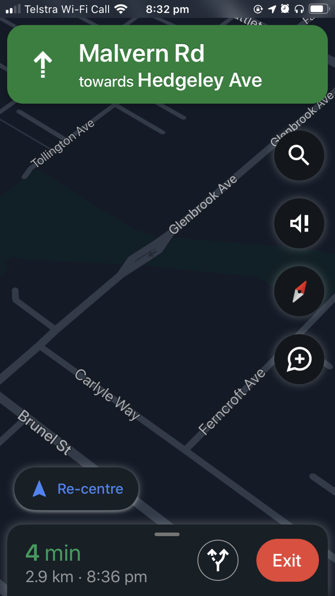
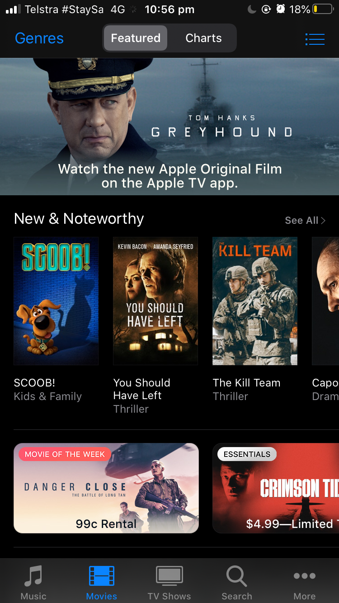
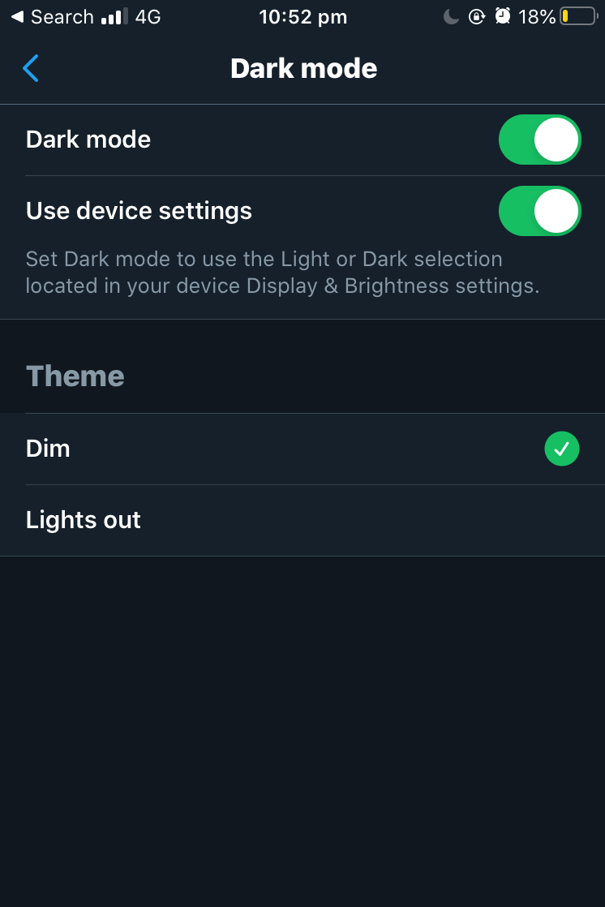
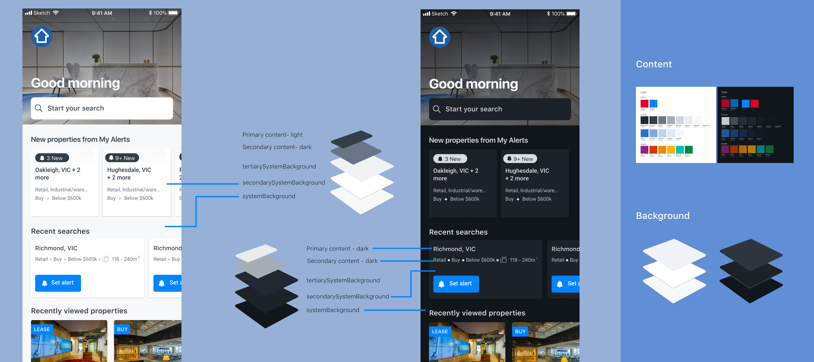
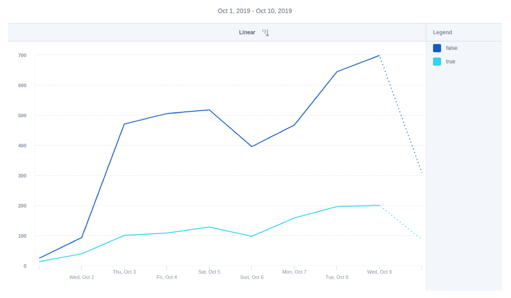

Dark Mode
How might we work with the team to implement dark mode?
01.-
The beginning
Should we implement dark mode?
In 2019, Apple released iOS 13, which enables dark mode for apps that chose to adopt. As an app team, we began to ask ourselves, should we implement dark mode?
I wanted to understand the value of dark mode before jumping straight into the design. I picked up some research in between projects to understand more. Understanding the value helped me to see the benefit of this as a feature and helped the team to prioritise this into our backlog.
02.-
The research
Peak search hours are between 8pm-10pm
Many movies apps already have dark mode. As most people watch movies at night, having the screens in dark mode is easier on the eyes. From Mixpanel, we know our app gets the most traffic at night time. For this reason, I could see an opportunity for dark mode because people like to do a bit of search on their app before going to bed.
Supporting dark mode provides another user benefit through battery power saving. From research, at full screen brightness, dark mode uses 43% less power than light mode. Black on OLED screens is known to use less power because the LEDs that make up each pixel are off, whereas displaying white means the LEDs need to shine and consume power.

Google map
Google map switches to dark mode after sunset automatically to make night time driving easier.

Apple Movie
Dark mode is no stranger to entertainment apps.

Twitter also has built in dark mode before iOS 13. In settings, users can not only change the app to dark mode, but also have the option to choose between dim and lights out.
03.-
Design process
Cross-team collaboration
Working on dark mode gave me an opportunity to share knowledge and worked together with other app designers in the business. It was so fun! Different teams have different views in terms of the size of this project. We started out by defining the design principles for this piece of work. Even though each of the app under REA has its own identity, we wanted to ensure the new theme we roll out is consistent in a group level. And part of the design principles (and the obvious one) was the make sure we share the same colour palette.
Colour palette- first pass
What colour should we use for dark mode? I gave it a go by picking the primary dark colour(shadowstone) from our current component library. I thought by reusing the colour, our dark mode can feel more in brand. I tried with both dark blue and black. From the feedback I received, the dark blue was the preferred option because people felt it was easier on the eyes. However when we place the dark blue on the scale with other apps that also have dark mode, the initial dark blue palette turned out to be on the lightest side. That wasn’t ideal because dark mode shouldn’t be too light.
The working group got together and revisited the colour palette. The goal was the find the middle point between dark blue and black. We iterated with a few options. In the end we landed on a palette we were pretty happy to use as a reference.
04.-
Development handover
System background v.s content colours
I then passed the palette to the developer in my team. After giving it a go, we noticed it didn’t look quite right. If we just follow the palette, some of the design principles in light mode couldn’t be translated to dark mode.
From the conversation with the developers in the team, I learnt that in code you can set your default background colours. We need to separate our approach for background colours and content. This allows us to translate the elevated view in light mode into dark mode. I came up with a simple graph to communicate with the team and it was shared across the business for other designers to communicate with their developers. The rule of thumb is to set up primary, secondary and tertiary background colours, then everything else follow the colour palette.

05.-
The impact
Users are using dark mode in our app
We have found that close to 30% uptake just 2 weeks after the release (October 2019). For users who are Dark Mode enabled, usage has increased incrementally. While non Dark Mode enabled usage is still higher, Dark Mode usage is still rising. Although the goal of this project was not to convert users to using dark mode, but instead to improve the experience of the app. Seeing the percentage of uesrs adopting dark mode gave us confident to iterate the UI further. With popular apps (such as Instagram) slowly phasing in Dark Mode we will track any uptake that we could see on the back of this.

Since launching the first iteration, I have been making more updates such as making sure all minor details pass accessibility requirements.
06.-
Key learnings
Socialise new ideas early
I’m very happy with the outcome and process of this project. I’m glad I didn’t take it as ‘another UI card’ . I started with understanding why dark mode is a thing and how it may benefit our app users. This helps me bring the team along the journey and to see the value of our change.
Accessibility check
One thing that I learnt while designing for dark mode is to take the accessibility check more seriously. It is just as important as light mode but even more so in dark mode because we need to ensure the colour contrast is readable. There were components needed to be assessed on a case by case basis. Sometimes we need to soften the colours in dark mode so that everything on the page can look cohesive.
Dark mode is now part of the design and QA process
Moving forward, dark mode becomes part of the design process. In every new feature we design, we need to test in dark mode. Just like how we test in different sizes of devices, we want to ensure the implementation works well in dark mode and adjust the design to accomodate.